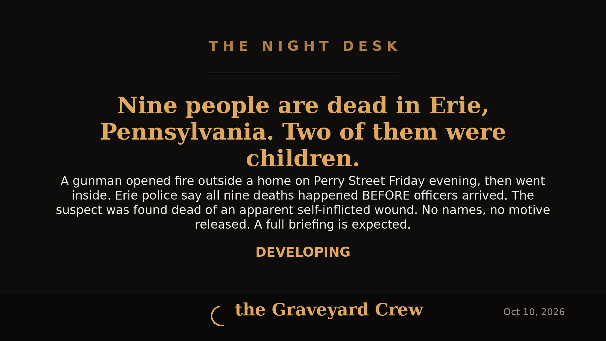

October 10, 2026
9 dead in Erie, Pa. mass shooting — suspected shooter kills 8, most of them family, then himself

Headline card by The Night Desk
9 dead in Erie, Pa. mass shooting — suspected shooter kills 8, most of them family, then himself
Nine people are dead — including two children and a woman who was eight months pregnant — after a mass shooting Friday afternoon, Oct. 9, at a home in the 700 block of Perry Street in Erie, Pennsylvania, that police believe ended in murder-suicide.
What happened
Erie Police Chief Rick Lorah said officers were dispatched to 722 Perry St., near East Seventh Street, within minutes of a ShotSpotter gunshot-detection alert at about 4:52 p.m. Friday. Officers arrived roughly three minutes after the alert.
The first officers on scene found two women fatally wounded outside the home — ages 51 and 37. Inside the house, officers found six more victims — a 44-year-old woman, a 24-year-old woman who was eight months pregnant, a 19-year-old man, a 21-year-old man, a 5-year-old boy, and a 1-year-old girl — along with the suspected shooter, a 45-year-old man, who died of an apparent self-inflicted gunshot wound.
Investigators determined that all nine deaths occurred before police arrived. No shots were fired after officers got to the scene — sounds neighbors mistook for gunfire during the response were law-enforcement flash bangs used by the tactical team. The doors were locked and the windows covered when officers arrived, and the SWAT team later cleared the residence.
Mostly family
At a press conference Saturday afternoon at Erie City Hall, Lorah said eight of the nine people who died were related; the ninth was a family friend. The suspected shooter was among those related to the family. Police have not released any names and have not said how the victims were connected to one another. No motive has been announced.
The Erie County Coroner, Lyell Cook, ruled the deaths of six adults, two children, and the 24-year-old woman's unborn child as homicides — nine homicide rulings in all — and ruled the 45-year-old man's death a suicide.
"The circumstances we are working through are deeply disturbing," Lorah said Friday. "At this time, we can confirm that the suspect is deceased. Based on the information currently available to us, there is no ongoing threat to public."
Pennsylvania Governor Josh Shapiro offered his administration's "full support" to Erie Mayor Daria Devlin.
No ongoing threat
Police emphasized that the deaths were not the result of a delayed response or a prolonged standoff — the tactical operation after arrival was about securing a scene with limited information while seeking a search warrant, not an hours-long negotiation with a barricaded gunman.
This story is developing. Names and a possible motive are expected as the investigation continues — The Night Desk will update as facts land.
Source: Erie Times-News — read the original report
← Back to latest stories